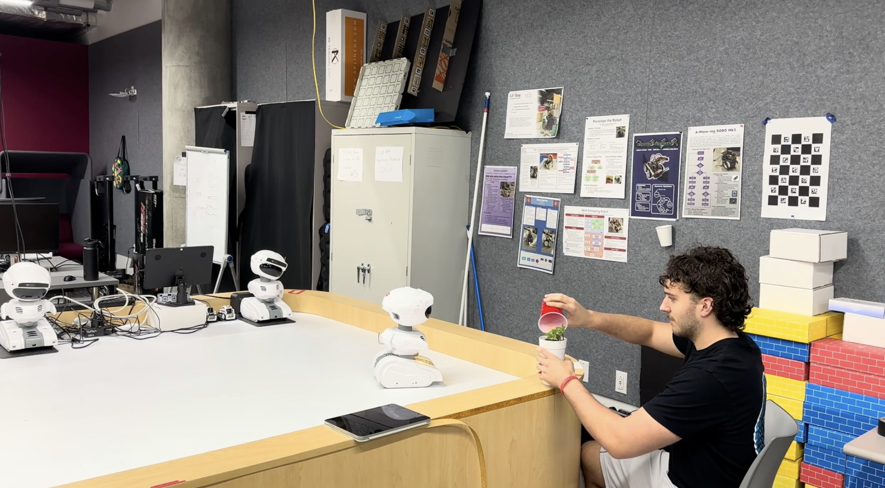

Effect of Mistake Severity on Human-Robot Interactions
How does the severity of a robot’s mistakes change whether people trust it, and whether they still do what it says?

Robots are moving into everyday spaces, and no autonomous system is ever perfectly reliable. When a robot slips up, people’s trust can fall, but building an error-free robot is impossible. The real design challenge is understanding how mistakes of different severity shift trust, and how to keep that trust properly calibrated when things go wrong.
A Wizard-of-Oz study with the Misty II robot, staging minor, moderate, and severe mistakes.
Replicating and extending Salem et al., we ran 30 participants through collaborative tasks with a Misty II robot that was secretly operated by a researcher. Each person experienced robot errors at a controlled level of severity, and we measured both what they reported feeling and how they actually behaved.
As mistakes got worse, participants reported lower trust and rated the robot as less reliable, consistently across the group.
Those same participants rarely stopped cooperating. Lower stated trust did not consistently translate into less compliance with the robot.
That gap between what people feel and what they do suggests trustworthy robots need to support appropriate trust calibration, not simply minimize mistakes.
Want the study design, measures, and full results? The complete write-up covers the method, the mistake-severity manipulation, and what the perceived-versus-behavioral trust gap means for design.
Read the full paper →